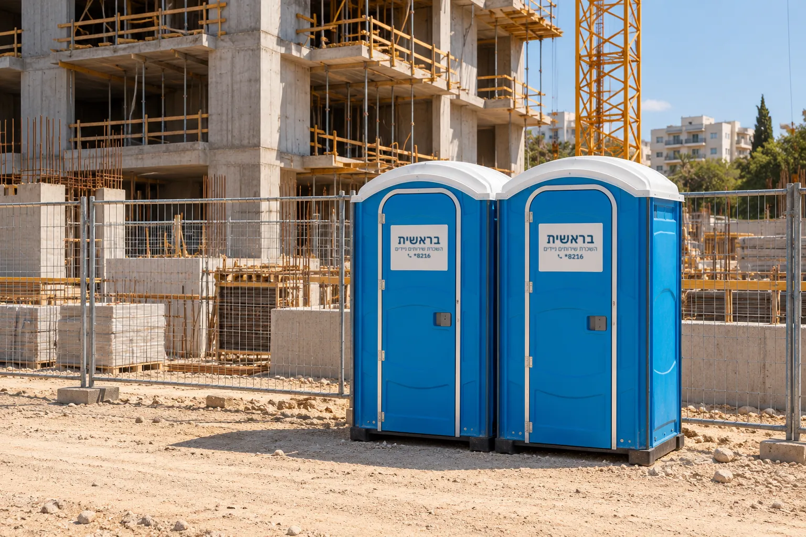

שירותים ניידים לאתר בנייה
אם אתם מנהלים פרויקט בנייה, התפקיד שלכם כולל פתרון תברואתי לעובדים. לרוב אין באתר גישה למערכת ביוב קבועה, ולכן נדרשים שירותים כימיים ייעודיים, יחד עם תחזוקה שוטפת לשמירה על היגיינה.
יחידה עצמאית וסגורה, בלי מים ובלי ביוב
שירותים כימיים פועלים כיחידה עצמאית שאינה דורשת חיבור לתשתיות מים וביוב. בבסיס התא נמצא מיכל אגירה אטום עם תמיסה כימית ייעודית, שמפרקת את הפסולת האורגנית, מחטאת את המיכל ומנטרלת ריחות.
המבנה מתוכנן לאוורור טבעי ועשוי מחומרים עמידים וקלים לניקוי. כך אפשר למקם את התאים בכל נקודה באתר, ללא הכנות מוקדמות.

לכל מי שעובד בשטח, מהעובדים ועד צוותי הפיקוח
אתרי בנייה פעילים
מהקמת בנייני מגורים ומגדלי משרדים ועד פרויקטים של התחדשות עירונית (תמ"א 38) בלב אזורים צפופים.
עבודות סלילה ופיתוח
בכבישים ובשטחים פתוחים.
מתחמים לוגיסטיים ותעשייה
מתחמים בבנייה, מפעלים בשיפוץ ואזורי תעשייה מתחדשים שאין בהם גישה זמינה לביוב.
כמה תאים ואיזה דגם
הכול מתחיל בשיחת ייעוץ להבנת הצרכים של האתר: כמות העובדים הצפויה ומשך העבודה המתוכנן. בהתאם לאפיון נבחר יחד את הדגם, מתא שירותים סטנדרטי ועמיד, דרך דגמים משודרגים, ועד תאים נגישים בהתאם לתקנות הבטיחות והנגישות.
תאים כימיים סטנדרטיים משמשים כיחידות עצמאיות ומתאימים מאוד לאתרי בנייה. ככלל אצבע, באירועים או אתרים של עד 200 משתתפים מומלץ להציב 2-3 תאי שירותים, ולהמשיך ביחס דומה ככל שכמות האנשים גדלה.
אפיון ושיחה ראשונית
כמות העובדים ומשך העבודה.
בחירת הדגם
סטנדרטי, משודרג או נגיש.
הצעת מחיר מפורטת
כוללת את כל מרכיבי השירות, ללא עלויות נסתרות.
הובלה והצבה
לכל חלקי הארץ, במיקום נגיש לעובדים ויציב מבחינה בטיחותית.
תחזוקה שוטפת
לאורך כל תקופת ההשכרה.
ריקון תקופתי לאורך כל חיי הפרויקט
השירות אינו מסתיים בהצבה. התחזוקה כוללת ניקוי יסודי וחיטוי של התא, ריקון תקופתי של מיכל האיסוף באמצעות משאבות ייעודיות, והחלפה של התמיסה הכימית המפרקת פסולת ומנטרלת ריחות, וכן חידוש חומרים מבשמים.
פינוי מיכל האגירה באופן היגייני חיוני במיוחד באתרי בנייה פעילים. לפני אספקה אנחנו עורכים בדיקות תקינות וחיטוי יסודיות.
שאלות נפוצות על שירותים לאתרי בנייה
למה שירותים כימיים חיוניים באתר בנייה?
הם מאפשרים מתקן תברואה היגייני ונוח במקומות ללא גישה לביוב קבוע, מבטיחים את רווחת העובדים ושומרים על בריאות הציבור ועל דרישות הרגולציה בשטח.
האם נדרש חיבור למים או לביוב?
לא. התאים פועלים כמערכת עצמאית וסגורה ואינם דורשים תשתית כלשהי, ולכן אפשר למקם אותם בכל נקודה באתר.
האם אפשר לשכור לתקופות קצרות?
כן. אפשר לשכור לטווח קצר עבור עבודות נקודתיות, או לטווח ארוך עבור אתרי בנייה פעילים, בהתאם ללוח הזמנים בשטח. השכרה ארוכת טווח
כמה עולה לשכור שירותים כימיים לאתר בנייה?
טווח המחירים רחב. המחיר נקבע לפי סוג הדגם, כמות היחידות, משך ההשכרה ומיקום האתר, וכולל גם את תדירות התחזוקה והשאיבות לאורך התקופה. ממה מורכב המחיר
להצעת מחיר לאתר הבנייה שלכם חייגו 8216*, או השאירו פרטים בעמוד צור קשר. ייעוץ והצעת מחיר ללא התחייבות.